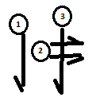
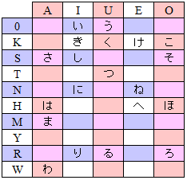

Japanese Culture
This week we are learning 8 new syllables and 16 new symbols. Again, many of these
have elements in common. RO and RU are very similar to the strokes we learned in WA
and NE. KI and SA are the "Captain Hook" letters. They are very similar to each other.
You can also look at the katakana for similar elements. Doesn't the katakana for
SA, look a lot like RI? Look for things like that so you can learn the same kinds
of strokes that combine to make different syllables.
KE, HA, MA, and HO all follow the same pattern in terms of stroke order:
down on the left (if there is any), horizontal on top (if there is any), then the
down on the right. So there is a lot in common with the kana you have already
learned and among the new ones.

Now you know 21 syllables and 42 of
the kana. There are 10 consonants and 5 vowels which should give you 50 syllables,
but some of them do not exist and others are added, so really there are 48. You
are almost halfway there! It's going to take us the rest of January to learn all
the kana, but after that you will be able to read any Japanese word!
Foods in Japan
Click to enlarge/hide

Japan is so mountainous that growing crops is impossible in much of the country.
Rice is their most common crop with lots of wheat and other grains. Because Japan
is so far to the north, parts of the country are very cold. It's like living in
Maine or New Hampshire with cold snowy winters and short growing seasons. The
mountainous terrain and climate make feeding the Japanese people a challenge.
 Japanese farmers have fed their people by inventing new farming techniques. They
use terraces to turn hills into farmland. It's hard to plant and harvest without
tractors, but now whole sections of the land can be productive. They have also
drained swamps or flooded land to make room for rice farming. It is always a
struggle to convert the Japanese hills into food.
Japanese farmers have fed their people by inventing new farming techniques. They
use terraces to turn hills into farmland. It's hard to plant and harvest without
tractors, but now whole sections of the land can be productive. They have also
drained swamps or flooded land to make room for rice farming. It is always a
struggle to convert the Japanese hills into food.
Clothes in Japan
 Japanese people today tend to wear clothing that is much like we wear in America. Traditional
Japanese clothing, however, is quite fancy. All Japanese wear a skirt/pants called hakama.
A hakama can be divided like pants or one piece like a skirt. Originally, men wore
a coat called haori. Now women wear the haori, too.
Japanese people today tend to wear clothing that is much like we wear in America. Traditional
Japanese clothing, however, is quite fancy. All Japanese wear a skirt/pants called hakama.
A hakama can be divided like pants or one piece like a skirt. Originally, men wore
a coat called haori. Now women wear the haori, too.
 Shoes are one of the areas where Japanese customs are most different from ours.
In many American homes, people wear their shoes all the time. In other homes they
don't. But in Japan, any home, hotel, public building--even some businesses--will
expect you to take your shoes off at the door. The Japanese have a custom that all
shoes come off at the door. In the home, people walk around in their socks or tabi.
Some special rooms like the bathroom require their own shoes for similar reasons.
This is just one of the ways Japanese people show respect for the places they visit.
Shoes are one of the areas where Japanese customs are most different from ours.
In many American homes, people wear their shoes all the time. In other homes they
don't. But in Japan, any home, hotel, public building--even some businesses--will
expect you to take your shoes off at the door. The Japanese have a custom that all
shoes come off at the door. In the home, people walk around in their socks or tabi.
Some special rooms like the bathroom require their own shoes for similar reasons.
This is just one of the ways Japanese people show respect for the places they visit.
Buildings in Japan
 As with language and other cultural aspects, Japanese architecture has a lot in common with
its Chinese counterpart. Both cultures work in wood and have peaked, tiled roofs. Both kinds
of architecture as supposed to be part of the natural world around them. This is called Feng Shui.
Traditional Japanese buildings often have paper walls that slide and open to let sunlight and air
in. They are put together almost entirely out of wood, event avoiding nails in almost
all of the building.
As with language and other cultural aspects, Japanese architecture has a lot in common with
its Chinese counterpart. Both cultures work in wood and have peaked, tiled roofs. Both kinds
of architecture as supposed to be part of the natural world around them. This is called Feng Shui.
Traditional Japanese buildings often have paper walls that slide and open to let sunlight and air
in. They are put together almost entirely out of wood, event avoiding nails in almost
all of the building.
 Although modern Japanese architecture is very similar to what you might see in
New York or Los Angeles, they are more constrained by size. A full family in New York
might live in a single floor of our house. In Japan, the apartments are even smaller
sometimes with the bathroom tucked into a closet. Still, the Japanese love Feng Shui
and their style of architecture tends to open up to nature when possible. Away from
the cities, they open up their buildings to the world.
Although modern Japanese architecture is very similar to what you might see in
New York or Los Angeles, they are more constrained by size. A full family in New York
might live in a single floor of our house. In Japan, the apartments are even smaller
sometimes with the bathroom tucked into a closet. Still, the Japanese love Feng Shui
and their style of architecture tends to open up to nature when possible. Away from
the cities, they open up their buildings to the world.